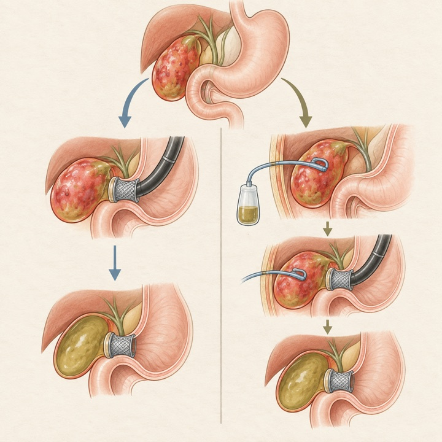
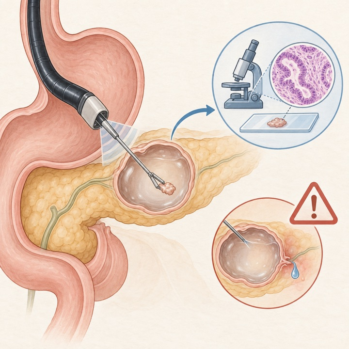
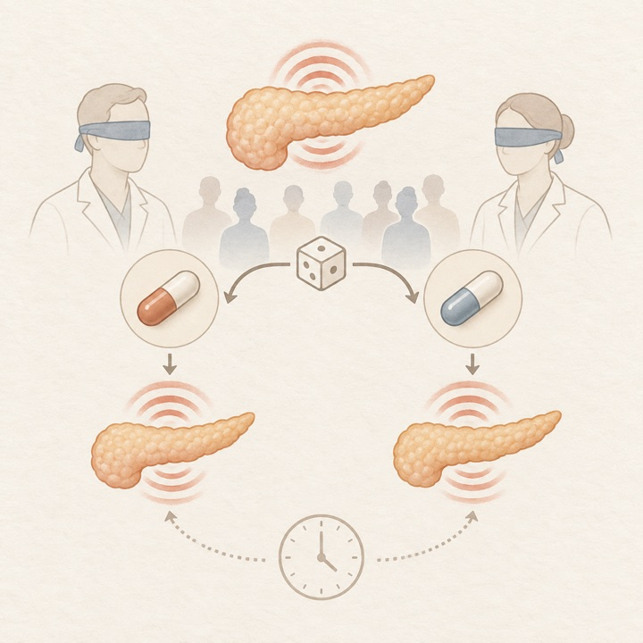
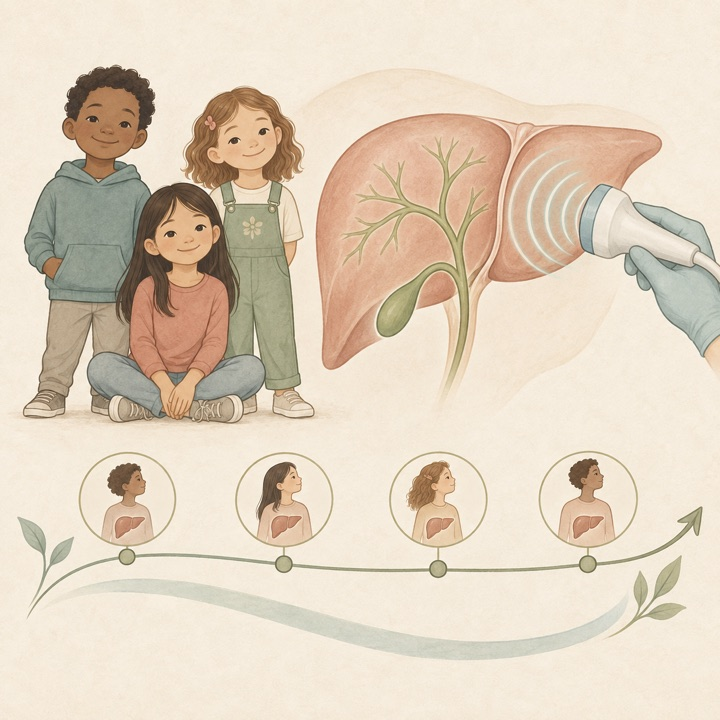
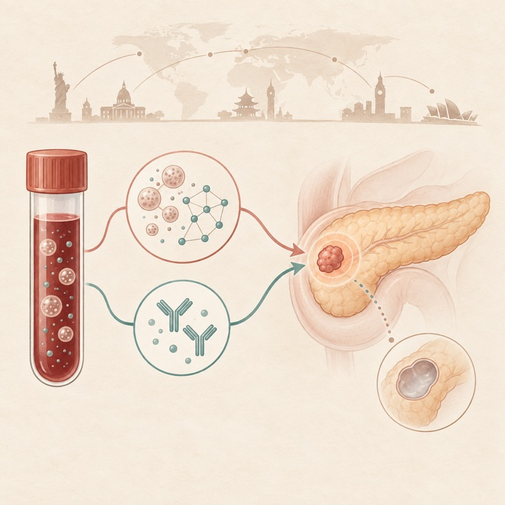
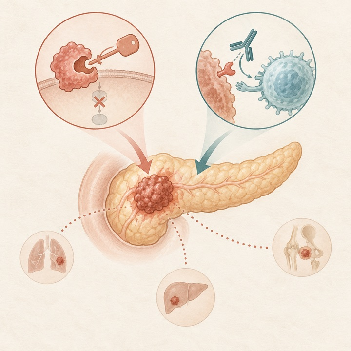
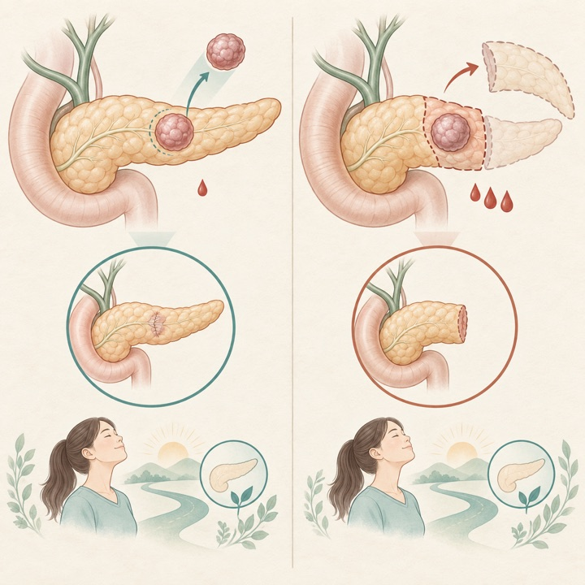
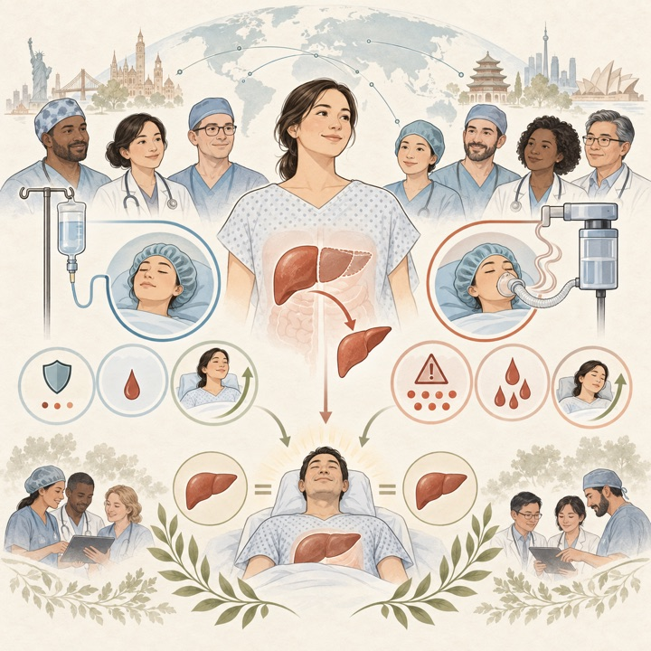

PANXEON血液検査が早期PDACを感度86.8%で検出
Nature Medicine / Q1Prospective multicenter biomarker study
4か国1,785人で、10-miRNAシグネチャとCA19-9を統合。I〜II期感度86.8%ですが、高リスク対照の偽陽性15.6%には注意が必要です。
Tokai University Pancreatobiliary Group
This Week's Pancreatobiliary Research Highlights
臨床的重要性、研究デザイン、診療への応用可能性を基準に4報を選定しました。IFとJCR quartileは2025年値（2026年公表、判明した最良カテゴリ）を使用し、確実に確認できない場合はQ4とする方針です。
4か国1,785人で、10-miRNAシグネチャとCA19-9を統合。I〜II期感度86.8%ですが、高リスク対照の偽陽性15.6%には注意が必要です。
107例のプラセボ対照試験で12週Izbicki pain scoreに差なし。鎮痛目的だけの酵素補充を支持しない陰性試験です。
既治療転移性PDACで化学療法を用いない併用療法が有望な活性を示しましたが、単群早期相で比較試験が必要です。
93例で組織採取十分率72%、基準診断との一致94.7%。有害事象17.2%と死亡1例から、選択例に限定すべき結果です。
日本語: 手術不適の急性胆嚢炎239例を、初回EUS-GBD 180例とPTGBD後の内瘻化EUS-GBD 59例で比較しました。各経路の手技成功は95.6%対93.2%、早期有害事象は10.6%対11.9%で差がなく、成功例の晩期有害事象・再発も同等でした。初回EUS-GBDは手技時間が短縮しましたが、経路ごとの対象選択が異なる後ろ向き研究であり、優劣ではなく臨床安定性・解剖・施設資源に応じた使い分けを支持します。
English: Primary EUS-GBD and conversion from PTGBD both achieved high pathway-defined success with similar adverse events. The shorter primary procedure time reflects workflow, not proof of superiority.

日本語: 初期画像後も組織診断が必要な20 mm以上の膵嚢胞93例でEUS-TTNBを前向き評価しました。手技成功100%、十分な組織採取72%、基準診断との一致94.7%で、EUS形態や嚢胞液CEAより高い一致を示しました。一方、有害事象は17.2%で、軽症膵炎2例、菌血症1例に加え、腹腔内出血による死亡1例を認めました。診断価値は高いものの、結果が管理を変える選択例に限定し、出血リスクを含む説明が不可欠です。
English: EUS-TTNB achieved 72% adequate histology and 94.7% concordance, but adverse events occurred in 17.2%, including one fatal hemoperitoneum. Use should be selective.

日本語: 慢性腹痛を有する慢性膵炎成人107例を非腸溶性酵素54例とプラセボ53例に無作為化しました。12週のIzbicki pain score変化は群間差なし（差−2.5、95%CI −9.3〜4.2、p=0.49）で、24週評価、鎮痛薬・入院、QOLなども概ね同等でした。有害事象は軽度で同等です。外分泌不全への補充とは別に、疼痛軽減のみを目的とする非腸溶性酵素投与を支持しない、実務的に重要な陰性試験です。
English: In 107 adults with painful chronic pancreatitis, non-enteric-coated enzymes did not improve pain versus placebo at 12 or 24 weeks. This does not challenge replacement for exocrine insufficiency.

日本語: Childhood Liver Disease Research Networkの前向き縦断研究に登録された小児PSC 175例を初回解析しました。年齢中央値16.1歳、78%が大管型で、主な表現型はPSC/IBDでした。大半は生化学・肝硬度とも軽症で、門脈圧亢進所見は10%未満。肝硬度は肝胆道系酵素と関連し、PSC/AIH overlapではより高値でした。進展予測の結論は今後の縦断追跡を待つ必要がありますが、小児試験の層別化基盤となるコホートです。
English: The first 175 children in a prospective PSC cohort mostly had mild disease. Liver stiffness tracked biochemical severity and may support longitudinal monitoring and trial stratification.

Liquid biopsy for early detection of pancreatic ductal adenocarcinoma；膵管腺癌早期発見のための液体生検
日本語: 4か国1,785人を用いて10-miRNAシグネチャを開発・検証し、CA19-9と統合したPANXEONを評価しました。テストコホートでmiRNA単独のAUCは0.886、早期PDAC感度83.8%。統合検査はI〜II期感度86.8%、偽陽性率は低リスク対照3.2%、高リスク対照15.6%でした。高リスク膵嚢胞の高異型度病変も64.3%で検出しました。症例対照成分を含むバイオマーカー研究であり、実臨床スクリーニングの陽性的中率、検査後経路、死亡率低下は前向き実装研究での検証が必要です。
English: PANXEON combined a 10-miRNA signature with CA19-9 and reached 86.8% sensitivity for stage I–II PDAC. False positives in high-risk controls and clinical utility require prospective implementation studies.

日本語: 既治療KRAS G12D変異転移性PDAC 48例に選択的阻害薬HRS-4642とPD-L1阻害薬adebrelimabを投与しました。用量制限毒性・治療関連死はなく、推奨第II相用量37例で奏効率43.2%、病勢制御率81.1%、奏効期間中央値6.9か月、PFS 5.7か月、OS 11.5か月でした。化学療法非併用で注目されますが、少数・単群の早期相で、免疫寄与と標準療法比の有効性は無作為比較が必要です。
English: HRS-4642 plus PD-L1 blockade achieved a 43.2% response rate in the 37-patient RP2D cohort. The chemotherapy-free signal is encouraging but requires randomized confirmation.

日本語: 単施設1,035例と13施設1,200例の独立コホートで、SPNに対する臓器温存手術と標準的膵切除を傾向スコアマッチングで比較しました。温存手術は手術時間、出血量、輸血が少なく、grade B膵液瘻は多い一方、grade C膵液瘻、再手術、90日死亡、無再発・全生存は同等でした。若年女性に多い低悪性度腫瘍で長期機能温存を支持しますが、術式選択バイアスを残す観察研究であり、腫瘍位置・大きさ・術者経験による慎重な適応判断が必要です。
English: Across two large cohorts, organ-preserving surgery reduced operative burden without compromising survival, although grade B fistula increased. Residual selection bias limits causal conclusions.

日本語: 国際LDLT registryの1,466組を解析し、ドナー肝切除の全静脈麻酔（TIVA、82.8%）と吸入麻酔を比較しました。吸入麻酔は調整後もドナーCCI高値と関連し、重大合併症6.3%対1.2%、出血量中央値250対100 mL、輸血11.6%対6.0%、胆道合併症8.3%対2.5%でした。レシピエント転帰は同等です。ただし地域差が大きく、高登録施設はほぼTIVAであり、残余交絡を排除できません。麻酔法変更を勧める前に多施設RCTが必要です。
English: Volatile anesthesia was associated with higher donor morbidity, blood loss, transfusion, and biliary complications than TIVA. Strong center-level confounding makes randomized confirmation essential.

ClinicalTrials.gov公式APIを2026年9月20日に検索し、9月16日〜20日に新規公開された直接関連研究13件と、診療・開発上重要な更新12件を選択しました。一般固形癌のみ、嚢胞性線維症、糖尿病、食物アレルギー、PBC、無関係なIgG4・EUS略語などは除外しています。JRCTは検索していません。
| 新規｜既治療転移性PDAC | NCT07823049 XNW28012対模倣注射薬の第III相試験 2026-09-16公開 / 第III相 / 226例 / Recruiting。 |
|---|---|
| 新規｜進行PDAC | NCT07829185 mFOLFIRINOX＋pentamidine 2026-09-18公開 / 第I相 / 30例 / Not yet recruiting。 |
| 新規｜切除不能PDAC | NCT07828236 Lm-LLO-TT＋gemcitabine 2026-09-18公開 / 第I相 / 18例 / Not yet recruiting。 |
| 新規｜小児胆道拡張症 | NCT07825935 ロボット肝管空腸吻合後のリスク別ドレーン管理 2026-09-17公開 / 前向きRCT / 80例 / Not yet recruiting。 |
| 新規｜PDAC umbrella | NCT07825753 蛋白発現別ADC/PDC umbrella試験 2026-09-17公開 / 第II相 / 225例 / Not yet recruiting。 |
| 新規｜PEP予防 | NCT07826026 直腸indomethacin単独対乳頭部冷水灌流併用 2026-09-17公開 / 無作為化試験 / 120例 / Not yet recruiting。 |
| 新規｜高齢PDAC栄養 | NCT07821554 管理栄養士による個別化栄養ケア 2026-09-16公開 / 250例 / Not yet recruiting。 |
| 新規｜PDAC化学療法 | NCT07828756 albumin-bound paclitaxel（II）併用レジメン 2026-09-18公開 / 第II相 / 147例 / Not yet recruiting。 |
| 新規｜転移性膵癌栄養 | NCT07826780 / STRONG アプリ＋遠隔管理栄養士による栄養支援 2026-09-17公開 / 80例 / Not yet recruiting。 |
| 新規｜膵液瘻予測 | NCT07827911 術前免疫指標による膵切除後膵液瘻予測 2026-09-18公開 / 310例 / Not yet recruiting。 |
| 新規｜術前PDAC | NCT07824960 avutometinib／defactinib＋mFOLFIRINOX 2026-09-17公開 / 第I/II相 / 31例 / Not yet recruiting。 |
| 新規｜IgG4-RD | NCT07827469 tofacitinib対prednisone 2026-09-18公開 / 58例 / Completed。 |
| 新規｜局所進行PDAC | NCT07827053 SBRT＋adebrelimab＋NALIRIFOX conversion therapy 2026-09-18公開 / 第II相 / 36例 / Not yet recruiting。 |
| 更新｜PSC | NCT04685200 PSCの多領域統合的自然歴・機序研究 2026-09-16更新 / 143例 / Recruiting。 |
| 更新｜転移性PDAC | NCT06361888 surufatinib＋camrelizumab＋GnP 2026-09-17更新 / 第II/III相 / 502例 / Recruiting。 |
| 更新｜PDAC・BTC | NCT06428409 / MK-9999-02A sacituzumab tirumotecan単剤・併用 2026-09-17更新 / 第I/II相 / 220例 / Recruiting。 |
| 更新｜肝移植Treg | NCT03577431 生体肝移植後arTreg細胞療法 2026-09-16更新 / 第I/II相 / 9例 / Completed。 |
| 更新｜肝移植免疫抑制 | NCT06280950 everolimusによるtacrolimus最小化 2026-09-17更新 / 第II相 / 340例 / Recruiting。 |
| 更新｜膵NET | NCT07817225 cfDNA分子プロファイルによるリスク評価 2026-09-16更新 / 30例 / Active, not recruiting。 |
| 更新｜転移性PDAC | NCT07562152 atebimetinib＋GnP一次治療 2026-09-18更新 / 第III相 / 510例 / Recruiting。 |
| 更新｜IPMN | NCT04275557 radiogenomicsによる悪性化予測 2026-09-17更新 / 1,174例 / Recruiting。 |
| 更新｜再発性・慢性膵炎 | NCT04760847 intermittent fasting無作為化試験 2026-09-17更新 / 64例 / Not yet recruiting。 |
| 更新｜進行肝内胆管癌 | NCT06858735 / HYPERION CCA 化学免疫療法±肝局所放射線 2026-09-16更新 / 第II相 / 60例 / Recruiting。 |
| 更新｜転移性PDAC | NCT07450859 nuzefatide pevedotin 2026-09-18更新 / 第II相 / 39例 / Recruiting。 |
| 更新｜術後遺伝性PDAC | NCT04858334 / APOLLO BRCA1/2・PALB2病的変異に対するolaparib対placebo 2026-09-17更新 / 第II相 / 152例 / Recruiting。 |
PubMedの2026年9月14日〜9月20日EDATに加え、Nature Reviews Gastroenterology & Hepatology、The Lancet Gastroenterology & Hepatology、Gastroenterology、Gut、Clinical Gastroenterology and Hepatology、Annals of Surgery、Journal of Hepato-Biliary-Pancreatic Sciences、Gastrointestinal Endoscopy、Endoscopy、Surgical Endoscopy、Endoscopy International Open、VideoGIE、Clinical Endoscopy、Digestive Endoscopy、DEN Open、iGIEの公式サイトを直接確認しました。出版社側のアクセス制限がある場合は、公式DOI解決先とPubMed索引を突合しました。9月14〜15日は前版の検索日と重なるため、既掲載論文は重複掲載せず、新たに確認できたEUS-GBD研究のみ採用しました。速報・ahead of printの情報は更新されることがあります。
2026年9月9日〜9月15日版
2026年8月31日〜9月6日版
2026年8月24日〜8月30日版
2026年8月17日〜8月23日版
2026年8月10日〜8月16日版
2026年8月3日〜8月9日版
2026年7月27日〜8月2日版
2026年7月20日〜7月26日版
2026年7月13日〜7月19日版
2026年7月6日〜7月12日版
医療従事者向け情報： 本ページは医師・医学生・研究者向けの文献整理であり、患者向け広告、診療ガイドライン、個別の診断・治療助言ではありません。掲載内容は公開時点の情報に基づき、原著論文・最新ガイドライン・各施設の方針をご確認ください。